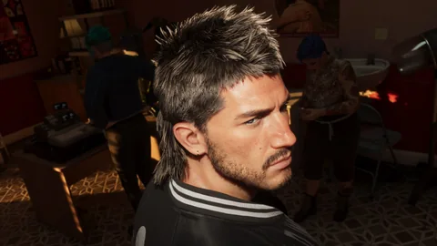
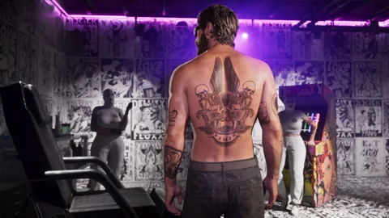

Tenues, accessoires, tatouages et coiffures : tout ce qui change l’apparence de Jason et Lucia, avec les collections annoncées et les adresses déjà présentées par Rockstar.
Les collections décrites ne constituent pas une liste de pièces achetables à l’unité. Les noms individuels, tarifs et conditions détaillées restent à documenter.
Stock 305

Sara’s Unisex Salon

Electric Fang Tattoo
Les quatre volets du style
Collections annoncées
Tenues
Les collections de l’Édition Ultimate et du Pack Vintage Vice City décrivent des tenues pour les deux personnages (ci-dessous). Les pièces à l’unité, leurs noms et leurs prix ne sont pas publiés. La boutique Stock 305 est l’adresse de streetwear présentée par Rockstar.
Lunettes, montres, bijoux, sacs, casquettes : les visuels officiels en montrent sur Jason et Lucia, mais aucun accessoire n’est nommé ni vendu séparément à ce jour. Rien n’est inventé ici : la liste se remplira avec des sources.
Adresse présentée
Tatouages
Electric Fang Tattoo, le salon de Stockyard présenté avec l’Édition Ultimate, propose des créations sur les personnages. Les motifs, leur prix et les emplacements possibles restent à documenter. La collection « Style de Vice City » comprend des tatouages.
Sara’s Unisex Salon s’occupe des coiffures, de la barbe de Jason, du maquillage et des ongles. Le Pack Vintage Vice City décrit une coiffure rétro pour Jason et des cheveux bouclés pour Lucia. Tarifs non publiés.
En attente de données officielles pour les pièces individuelles. Les collections et services annoncés sont présentés ci-dessous, sans fausse fiche ni case à cocher.
Collections annoncées
Collection de l’Édition Ultimate
Style de Vice City
Une sélection de tenues et de tatouages pour les deux protagonistes. Le détail des pièces n’est pas publié.
Collection annoncée · détail des pièces à documenter
Source et niveau de confirmation
Niveau 1 · obtention ou personnalisation décrite. L’achat séparé en jeu n’est pas confirmé.
Costume pastel en lin et coiffure rétro pour Jason ; mini-robe rouge à sequins et cheveux bouclés pour Lucia. Ces descriptions ne sont pas des noms de produits inventés.
Collection annoncée · détail des pièces à documenter
Source et niveau de confirmation
Niveau 1 · obtention ou personnalisation décrite. L’achat séparé en jeu n’est pas confirmé.
Les captures réutilisées conservent leurs crédits et leur provenance dans les médias du site. Les références communautaires restent dans leur catalogue d’origine, avec leur statut.